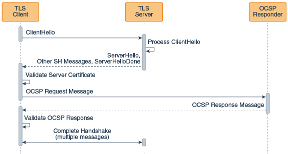
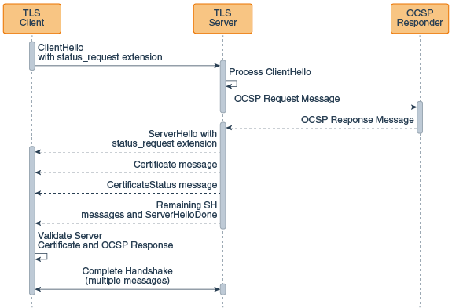

The following topics are covered:
Use the Online Certificate Status Protocol (OCSP), available since JDK 8u261, to determine the X.509 certificate revocation status during the Transport Layer Security (TLS) handshake.
X.509 certificates used in TLS can be revoked by the issuing Certificate Authority (CA) if there is reason to believe that a certificate is compromised. You can check the revocation status of certificates during the TLS handshake by using one of the following approaches.
Certificate Revocation List (CRL): A CRL is a simple list of revoked certificates. The application receiving a certificate gets the CRL from a CRL server and checks if the certificate received is on the list. There are two disadvantages to using CRLs that mean a certificate could be revoked:
CRLs can become very large so there can be a substantial increase in network traffic.
Many CRLs are created with longer validity periods, which increases the possibility of a certificate being revoked within that validity period and not showing up until the next CRL refresh.
See Certificate/CRL Storage Classes in Java PKI Programmer's Guide.
Client-driven OCSP: In client-driven OCSP, the client uses OCSP to contact an OCSP responder to check the certificate's revocation status. The amount of data required is usually less than that of a CRL, and the OCSP responder is likely to be more up-to-date with the revocation status than a CRL. Each client connecting to a server requires an OCSP response for each certificate being checked. If the server is a popular one, and many of the clients are using client-driven OCSP, these OCSP requests can have a negative effect on the performance of the OCSP responder.
OCSP stapling: OCSP stapling enables the server, rather than the client, to make the request to the OCSP responder. The server staples the OCSP response to the certificate and returns it to the client during the TLS handshake. This approach enables the presenter of the certificate, rather than the issuing CA, to bear the resource cost of providing OCSP responses. It also enables the server to cache the OCSP responses and supply them to all clients. This significantly reduces the load on the OCSP responder because the response can be cached and periodically refreshed by the server rather than by each client.
Client-driven Online Certificate Status Protocol (OCSP) enables the client to check the certificate revocation status by connecting to an OCSP responder during the Transport Layer Security (TLS) handshake.
The client-driven OCSP request occurs during the TLS handshake just after the client receives the certificate from the server and validates it.
Client-driven OCSP is used during the TLS handshake between the client and the server to check the server certificate revocation status. After the client receives the certificate, it performs certificate validation. If the validation is successful, then the client verifies that the certificate was not revoked by the issuer. This is done by sending an OCSP request to an OCSP responder. After receiving the OCSP response, the client checks this response before completing the TLS handshake.
The following figure illustrates how client-driven OCSP fits into the TLS handshake:
TLS Handshake with Client-Driven OCSP
This figure illustrates the following sequence:
The client sends a ClientHello message to the server.
The server receives this message and processes it.
The server sends a ServerHello message, followed by additional ServerHello messages, followed by a ServerHello done message to the client.
The client validates the server certificate. The client sends an OCSP request to the OCSP responder for this certificate.
The OCSP responder receives the request, then returns an OCSP response to the client.
The client checks the OCSP response to determine if the certificate has been revoked.
The client and server complete the TLS handshake (this takes multiple additional messages).
Usually the client finds the OCSP responder's URL by looking in the Authority Information Access (AIA) extension of the certificate, but it can be set to a static URL through the use of a system property.
Client-driven OCSP is enabled by enabling revocation checking and enabling OCSP.
To configure a Java client to use client-driven OCSP, the Java client must already be set up to connect to a server using TLS.
com.sun.net.ssl.checkRevocation to true.setRevocationEnabled method on PKIXParameters.Set the Security Property ocsp.enable to true.
Both steps are necessary. The ocsp.enable setting has no effect unless revocation checking is enabled.
Online Certificate Status Protocol (OCSP) stapling enables the presenter of a certificate, rather than the issuing Certificate Authority (CA), to bear the resource cost of providing the OCSP responses that contain the certificate's revocation status.
OCSP stapling is used during the Transport Layer Security (TLS) handshake between the client and the server to check the server certificate revocation status. The server makes the OCSP request to the OCSP responder and staples the OCSP responses to the certificates returned to the client. By having the server make the request to the OCSP responder, the responses can be cached, and then used multiple times for many clients.
The TLS handshake begins with the TLS ClientHello message. When OCSP stapling is used, this message is sent to the server with the status_request extension that indicates that the server should perform an OCSP request. After processing the ClientHello message, the server sends an OCSP request to the appropriate OCSP responder for each certificate. When the server receives the OCSP responses from the OCSP responders, it sends a ServerHello message with its status_request extension, indicating that OCSP responses will be provided in the TLS handshake. The server will then present the server certificate chain, followed by a message that consists of one or more OCSP responses for those certificates. The client receiving the certificates with stapled OCSP responses validates each certificate, and then checks the OCSP responses before continuing with the handshake.
If, from the client's perspective, the stapled OCSP response from the server for a certificate is missing, the client will attempt to use client-driven OCSP or Certificate Revocation Lists (CRLs) to get revocation information if the following are true:
The RevocationEnabled flag is set to true through the PKIXParameters.setRecovcationEnabled method.
OCSP checking is enabled by setting the ocsp.enable Security Property to true.
The following figure illustrates how client-driven OCSP fits into the TLS handshake:
TLS Handshake with OCSP Stapling
This figure illustrates the following sequence:
The client sends a ClientHello message with a status request extension to the server.
The server receives this message and processes it.
The server sends an OCSP request to the OCSP responder for this certificate.
The OCSP responder receives the request, then returns an OCSP response to the server.
The server sends a ServerHello message with a status request extension to the client.
The server sends a certificate message to the client.
The server sends a certificate status message to the client.
The server sends additional ServerHello messages, followed by a ServerHello done messages to the client.
The client validates the server certificate
The client checks the OCSP response in the certificate status message to determine if the certificate has been revoked.
The client and server complete the TLS handshake (this takes multiple additional messages).
OCSP checking works in conjunction with CRLs during revocation checking. See OCSP Support for PKI.
The OCSP stapling feature implements the TLS Certificate Status Request extension (section 8 of RFC 6066) and the Multiple Certificate Status Request Extension (RFC 6961).
The TLS Certificate Status Request extension requests revocation information for only the server certificate in the certificate chain while the Multiple Certificate Status Request Extension requests revocation information for all certificates in the certificate chain. In the case where only the server certificate's revocation information is sent to the client, other certificates in the chain may be verified using the Certificate Revocation Lists (CRLs) or client-driven OCSP (but the client will need to be set up to do this).
Although TLS allows the server to also request the client's certificate, there is no provision in OCSP stapling that enables the client to contact the appropriate OCSP responder and staple the response to the certificate sent to the server.
OCSP request and response messages are usually sent over unencrypted HTTP. The response is signed by the CA.
If necessary, the stapled responses can be obtained in the
client code by calling the getStatusResponses method on the ExtendedSSLSession object. The method signature
is:
public List<byte[]> getStatusResponses();
The OCSP response is encoded using the Distinguished Encoding Rules (DER) in a format described by the ASN.1 found in RFC 6960.
Online Certificate Status Protocol (OCSP) stapling is enabled
on the client side by setting the system property jdk.tls.client.enableStatusRequestExtension to
false (its default value).
To configure a Java client to make use of the OCSP response stapled to the certificate returned by a server, the Java client must already be set up to connect to a server using TLS, and the server must be set up to staple an OCSP response to the certificate it returns part of the TLS handshake.
If necessary, set the system property jdk.tls.client.enableStatusRequestExtension to
true.
com.sun.net.ssl.checkRevocation to true. You can do this from the command line or in
the code.setRevocationEnabled
method on the PKIXParameters class.For the client to include the stapled responses received from
the server in the certificate validation, revocation checking
must be set to true. If revocation
checking is not set to true, then the
connection will be allowed to proceed regardless of the presence
or status of the revocation information
Online Certificate Status Protocol (OCSP) stapling is enabled
on the server by setting the system property jdk.tls.server.enableStatusRequestExtension to
true. (It is set to false by default.)
The following steps can be used to configure a Java server to connect to an OCSP responder and staple the OCSP response to the certificate to be returned to the client. The Java server must already be set up to respond to clients using TLS.
Set the system property jdk.tls.server.enableStatusRequestExtension to
true.
This topic lists the effects of setting various properties when using the Online Certificate Status Protocol (OCSP). It shows the properties used in both client-driven OCSP and OCSP stapling.
Most of the properties are read at SSLContext instantiation time. This means that if
you set a property, you must obtain a new SSLContext object so that an SSLSocket or SSLEngine object you obtain from that
SSLContext object will reflect the
property setting. The one exception is the jdk.tls.stapling.responseTimeout property. That
property is evaluated when the ServerHandshaker object is created (essentially
at the same time that an SSLSocket or
SSLEngine object gets created).
| Property (available since JDK 8u261) | Description | Default Value |
|---|---|---|
jdk.tls.server.enableStatusRequestExtension |
Enables the server-side support for OCSP stapling. | false |
jdk.tls.stapling.responseTimeout |
Controls the maximum amount of time the server will use to obtain OCSP responses, whether from the cache or by contacting an OCSP responder. The responses that are already received will be sent in a
|
5000 (integer value in milliseconds) |
jdk.tls.stapling.cacheSize |
Controls the maximum cache size in entries. If the cache is full and a new response needs to be cached, then the least recently used cache entry will be replaced with the new one. A value of zero or less for this property means that the cache will have no upper bound on the number of responses it can contain. |
256 objects |
jdk.tls.stapling.cacheLifetime |
Controls the maximum life of a cached response. It is possible for responses to have shorter lifetimes than the value set with this property if the response has a nextUpdate field that expires sooner than the cache lifetime. A value of zero or less for this property disables the cache lifetime. If an object has no nextUpdate value and cache lifetimes are disabled, then the response will not be cached. |
3600 seconds (1 hour) |
jdk.tls.stapling.responderURI |
Enables the administrator to set a default URI in the event that certificates used for TLS do not have the Authority Info Access (AIA) extension. It will not override the Authority Info Access extension value
unless the |
Not set |
jdk.tls.stapling.responderOverride |
Enables a URI provided through the |
false |
jdk.tls.stapling.ignoreExtensions |
Disables the forwarding of OCSP extensions specified in
the |
false |
| PKIXBuilderParameters | checkRevocation Property | PKIXRevocationChecker | Result |
|---|---|---|---|
| Default | Default | Default | Revocation checking is disabled. |
| Default | true |
Default | Revocation checking is enabled.1 |
| Instantiated | Default | Default | Revocation checking is enabled.1 |
| Instantiated | Default | Instantiated, added to PKIXBuilderParameters object. |
Revocation checking is enabled.1 It will also
behave according to the PKIXRevocationChecker settings. |
1Note that client-side OCSP fallback will occur only if
the ocsp.enable Security Property is
set to true.
Developers have some flexibility in how to handle the
responses provided through OCSP stapling. OCSP stapling makes no
changes to the current methodologies involved in certificate path
checking and revocation checking. This means that it is possible
to have both client and server assert the status_request extensions, obtain OCSP responses
through the CertificateStatus message, and provide user
flexibility in how to react to revocation information, or the
lack thereof.
If no PKIXBuilderParameters is
provided by the caller, then revocation checking is disabled. If
the caller creates a PKIXBuilderParameters object and uses
the setRevocationEnabled method to
enable revocation checking, then stapled OCSP responses will be
evaluated. This is also the case if the com.sun.net.ssl.checkRevocation property is set
to true.
Client-side support for the On-Line Certificate Status Protocol (OCSP) as defined in RFC 2560 is supported.
OCSP checking is controlled by the following five Security Properties:| Property Name | Description |
|---|---|
ocsp.enable |
This property's value is either true or
false. If true, OCSP checking is enabled when doing certificate
revocation checking; if false or not set, OCSP checking is
disabled. |
ocsp.responderURL |
This property's value is a URL that
identifies the location of the OCSP responder. Here is an example:
ocsp.responderURL=http://ocsp.example.net:80 By default, the location of the OCSP responder is determined implicitly from the certificate being validated. The property is used when the Authority Information Access extension (defined in RFC 5280) is absent from the certificate or when it requires overriding. |
ocsp.responderCertSubjectName |
This property's value is the subject
name of the OCSP responder's certificate. Here is an example:
ocsp.responderCertSubjectName="CN=OCSP Responder, O=XYZ Corp" By default, the certificate of the OCSP responder is that of
the issuer of the certificate being validated. This property
identifies the certificate of the OCSP responder when the default
does not apply. Its value is a string distinguished name (defined
in RFC 2253) which identifies a certificate in the set of
certificates supplied during cert path validation. In cases where
the subject name alone is not sufficient to uniquely identify the
certificate, then both the |
ocsp.responderCertIssuerName |
This property's value is the issuer
name of the OCSP responder's certificate . Here is an example:
ocsp.responderCertIssuerName="CN=Enterprise CA, O=XYZ Corp" By default, the certificate of the OCSP responder is that of
the issuer of the certificate being validated. This property
identifies the certificate of the OCSP responder when the default
does not apply. Its value is a string distinguished name (defined
in RFC 2253) which identifies a certificate in the set of
certificates supplied during cert path validation. When this
property is set then the |
ocsp.responderCertSerialNumber |
This property's value is the serial
number of the OCSP responder's certificate Here is an example:
ocsp.responderCertSerialNumber=2A:FF:00 By default, the certificate of the OCSP responder is that of
the issuer of the certificate being validated. This property
identifies the certificate of the OCSP responder when the default
does not apply. Its value is a string of hexadecimal digits
(colon or space separators may be present) which identifies a
certificate in the set of certificates supplied during cert path
validation. When this property is set then the |
These properties may be set either statically in the Java
runtime's
<java_home>/conf/security/java.security file,
or dynamically using the java.security.Security.setProperty() method.
By default, OCSP checking is not enabled. It is enabled by
setting the ocsp.enable property to
true. Use of the remaining
properties is optional. Note that enabling OCSP checking only has
an effect if revocation checking has also been enabled.
Revocation checking is enabled via the PKIXParameters.setRevocationEnabled()
method.
OCSP checking works in conjunction with Certificate Revocation Lists (CRLs) during revocation checking. Below is a summary of the interaction of OCSP and CRLs. Failover to CRLs occurs only if an OCSP problem is encountered. Failover does not occur if the OCSP responder confirms either that the certificate has been revoked or that it has not been revoked.
PKIXParameters RevocationEnabled (default true) |
ocsp.enable
(default false) |
Behavior |
|---|---|---|
true |
true |
Revocation checking using OCSP, failover to using CRLs |
true |
false |
Revocation checking using CRLs only |
false |
true |
No revocation checking |
false |
false |
No revocation checking |
You might encounter connection failures during revocation
checking because the network is slow or the system clock is off
by some amount. Set the maximum allowable clock skew (the time
difference between response time and local time), in seconds,
used for revocation checks with the system property com.sun.security.ocsp.clockskew. If the property
has not been set, or if its value is negative, it's set to the
default value of 900 seconds (15 minutes).